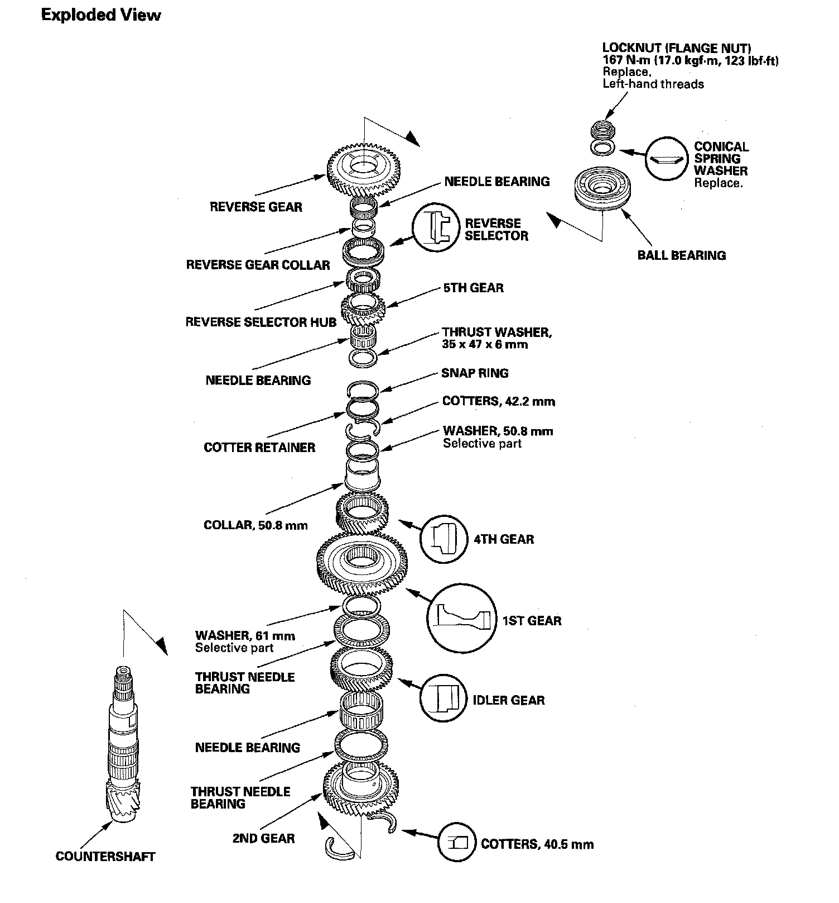
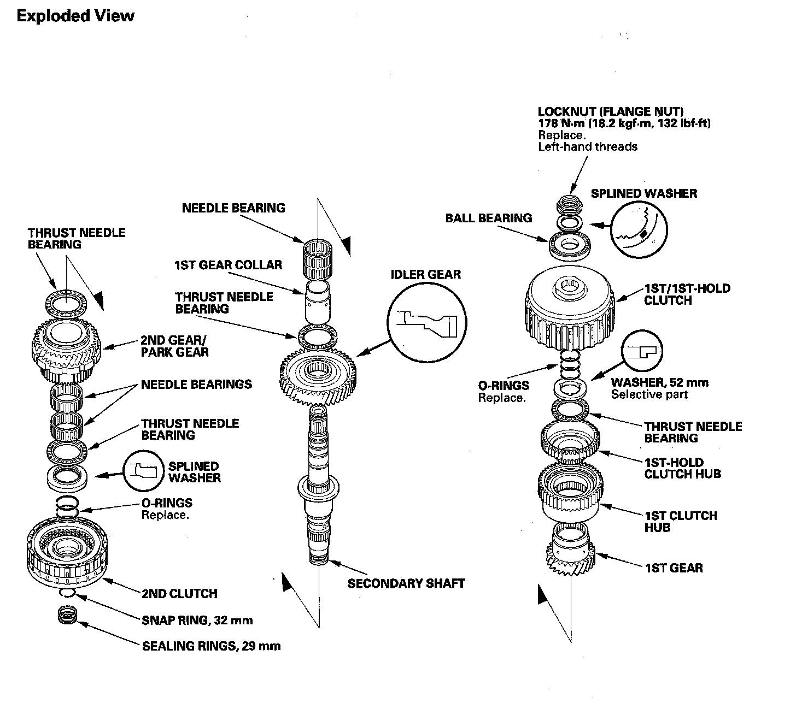
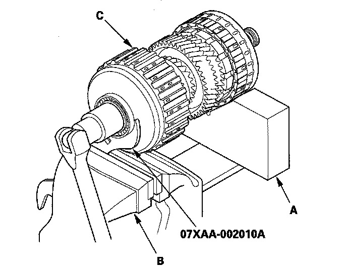
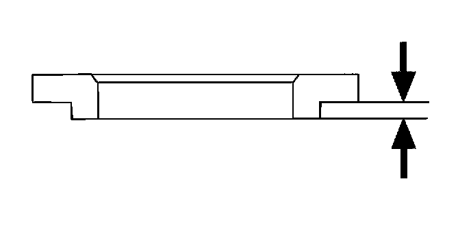
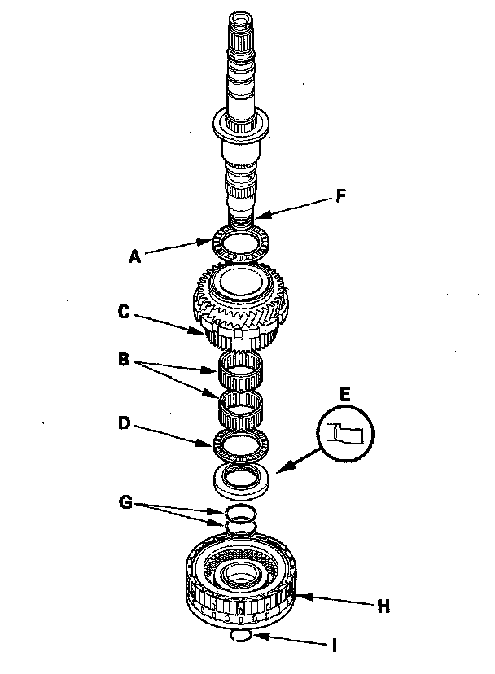
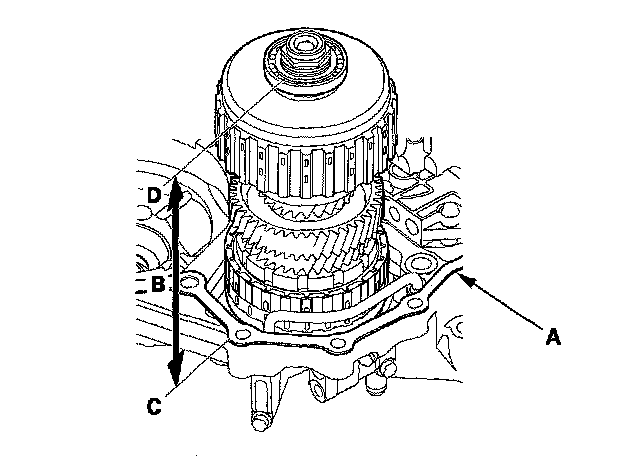

Part 1
Mainshaft Disassembly, Inspection, and Reassembly1. Remove the thrust needle bearing (A) mainshaft 5th gear (B) needle bearing (C) thrust needle bearing (D) mainshaft 5th gear collar (E) 4th/5th clutch (F) and O-rings (G) from the mainshaft (H).
Mainshaft:
2. Inspect the condition of the sealing rings (I). If the sealing rings are worn, distorted, or damaged, remove the set ring (J) and needle bearing (K) and replace the sealing rings with new ones.
3. Inspect the thrust needle bearing and needle bearing for wear and rough movement.
4. Inspect the splines for excessive wear and damage.
5. Inspect the 4th gear for wear and damage, and inspect the 4th gear bearing for wear and rough rotation.
6. Replace the mainshaft 4th gear (L) if the 4th gear is worn or damaged, or the bearing is worn or damaged.
7. Check the shaft bearing surfaces for scoring and excessive wear.
8. Lubricate all parts with ATF during reassembly.
9. Wrap the shaft splines with tape to prevent O-ring damage, install the new O-rings on the mainshaft, then remove the tape.
10. Install the 4th/5th clutch.
11. Install the mainshaft 5th gear collar, thrust needle bearing, needle bearing, mainshaft 5th gear, and thrust needle bearing.
Mainshaft 4th Gear Replacement
Special Tools Required
Driver, 40 mm I.D. 07746-0030100
1. Remove the mainshaft 4th gear (A) with the press. Place a shaft protector (B) between the press and mainshaft (C) to prevent damaging the mainshaft.
2. Slide the new mainshaft 4th gear (A) over the mainshaft (B) then press it into place using the driver (40 mm I.D.) and the press.
Countershaft Disassembly
Countershaft:

NOTE: Refer to the Exploded View as needed during the following procedure.
1. Cut the lock tab (A) off the countershaft locknut (B) using a chisel (C).
NOTE: Keep all of the chiseled particles out of the countershaft.
2. Hold the countershaft with a wrench and a vise securely, loosen the locknut, and remove it. The locknut has left-hand threads.
3. Place the countershaft 5th gear (A) on press bases (B) and place a shaft protector (C) between the countershaft (D) and the press to prevent damaging the countershaft.
4. Press the countershaft out of the press-fitted bearing (E) and the press-fitted reverse selector hub, and remove the countershaft while holding the underside of the countershaft. The countershaft falls down when pressing the countershaft out of the press-fitted reverse selector hub. Some reverse selector hubs are not press-fitted, and the countershaft falls down when pressing the countershaft out of press-fitted bearing.
5. Remove the remaining parts from the countershaft.
6. Inspect the bearing for galling and rough movement.
7. Check the shaft bearing surfaces for scoring and excessive wear, and check the shaft splines for excessive wear and damage.
8. Check the idler gear axial clearance and 4th gear axial clearance.
Countershaft Idler Gear and 4th Gear Axial Clearance Inspection
1. Install the 40.5 mm cotters (A) 2nd gear (B) thrust needle bearing (C) needle bearing (D) idler gear (E) thrust needle bearing (F) 61 mm washer (G) 1st gear (H) 4th gear (I) 50.8 mm collar (J) 50.8 mm washer (K) 42.2 mm cotters (L) cotter retainer (M) and snap ring (N) on the countershaft (O). Install the 40.5 mm cotters, idler gear, 1st gear, and 4th gear in the direction shown.
2. Insert a feeler gauge blade (A) as thick as possible between the 50.8 mm collar (B) and 50.8 mm washer (C).
3. Set the dial indicator (A) on the idler gear (B).
4. Measure the idler gear axial clearance in at least three places while moving the idler gear. Use the average as the actual clearance.
5. If the measurement is out of standard, remove the 61 mm washer and measure its thickness.
6. Select and install a new washer, then recheck the clearance.
7. Measure the clearance between the 50.8 mm collar (A) and the 50.8 mm washer (B) with a feeler gauge (C) in at least three places. Use the average as the actual clearance.
8. If the measurement is out of standard, remove the 50.8 mm washer and measure its thickness.
9. Select and install a new washer, then recheck the clearance.
Countershaft Reassembly
Special Tools Required
Driver, 40 mm I.D. 07746-0030100
1. Install the 40.5 mm cotters (A) 2nd gear (B) thrust needle bearing (C) needle bearing (D) idler gear (E) thrust needle bearing (F) 61 mm washer (G) 1st gear (H) 4th gear (I) 50.8 mm collar (J) 50.8 mm washer (K) 42.2 mm cotters (L) cotter retainer (M) and snap ring (N) on the countershaft (O). Install the 40.5 mm cotters, idler gear, 1st gear, and 4th gear in the direction shown.
2. Install the thrust washer (P) needle bearing (Q) and 5th gear (R).
3. Slide the reverse selector hub (A) over the countershaft (B) then press it into place using the driver (40 mm I. D.) and the press.
NOTE: Some reverse selector hubs are not press-fitted, and can be installed without using the special tool and a press.
4. Install the reverse selector, reverse gear collar, needle bearing, and reverse gear over the reverse selector hub.
5. Install the ball bearing (A) over the countershaft, then press it into place using the driver (40 mm I.D.) and the press.
6. Install the conical spring washer (A) in the direction shown, and install the new locknut (B).
7. Hold the countershaft securely with a wrench and a vise, and tighten the locknut to 167 N-m (17.0 kgf-m, 123 lbf-ft).
NOTE:
^ Use a torque wrench to tighten the locknut. Do not use an impact wrench.
^ The locknut has left-hand threads.

8. Stake the locknut into its shaft in depth (A) of 0.7-1.3 mm (0.03-0.05 in.) using a 3.5 mm punch (B).

Secondary Shaft Disassembly
Secondary Shaft:

Special Tools Required
Wrench, 40 x 42 mm 07XAA-002010A
NOTE: Refer to the Exploded View as needed during the following procedure.
1. Cut the lock tab (A) off the secondary shaft locknut (B) using a chisel (C).
NOTE: Keep all of the chiseled particles out of the secondary shaft.
2. Place a V-block (A) on a vise (B) and put the secondary shaft (C) on the V-block and vise.

3. Attach the wrench (40 x 42 mm) onto the 1st clutch guide, and secure the wrench (40 x 42 mm) with the vise to hold the secondary shaft. Loosen the locknut, and remove it. Remove any burrs from splines on the shaft and splined washer.
4. Place the idler gear (A) on press bases (B) and place a shaft protector (C) between the secondary shaft (D) and the press to prevent damaging the secondary shaft.
5. Press the secondary shaft out of the press-fitted bearing (E) and remove the secondary shaft while holding the underside of the secondary shaft. The secondary shaft falls down when pressing the secondary shaft out of the press-fitted bearing.
6. Remove the 1st/1st-hold clutch, 52 mm washer, thrust needle bearing, 1st gear assembly, needle bearings, 1st gear collar, thrust needle bearing, and idler gear.
7. Remove the 32 mm snap ring, and remove the 2nd clutch, splined washer, thrust needle bearing, needle bearing, 2nd gear/park gear, and thrust needle bearing.
8. Inspect the bearings for galling and rough movement.
NOTE: The needle bearing (A) on the 1st gear collar contains the only two no-roller cavities (B); this is normal.
9. Check the shaft bearing surfaces for scoring and excessive wear, and check the shaft splines for excessive wear and damage.
10. Check the 1st gear axial clearance 1st gear one-way clutch and secondary shaft installation height.
Secondary Shaft 1st Gear Axial Clearance Inspection
Special Tools Required
^ Driver, 40 mm I.D. 07746-0030100
^ Attachment, 30 mm I.D. 07746-0030300
1. Install the idler gear (A) thrust needle bearing (B) 1st gear collar (C) needle bearing (D) 1st gear assembly (E) thrust needle bearing (F) 52 mm washer (G) and 1st/1st-hold clutch (H) on the secondary shaft (I). Install the idler gear and 52 mm washer in the direction shown. Do not install the O-rings during inspection.
2. Install the ball bearing (A) over the 1st/1st-hold clutch guide using the driver (40 mm I.D.) the attachment (30 mm I.D.) and the press.
3. Install the splined washer with the marked side up over the ball bearing in the same manner as installing the ball bearing using the driver (40 mm I.D.) the attachment (30 mm I.D.) and the press.
4. Install the old locknut and tighten it to 29 N-m (3.0 kgf-m, 22 lbf-ft).
5. Set the dial indicator (A) on the 1st clutch hub (B).
6. Measure the 1st gear axial clearance in at least three places while moving the 1st gear. Use the average as the actual clearance.
7. If the measurement is out of standard, remove the washer and measure its difference.

8. Select and install a new washer, then recheck the clearance.
1st Gear One-way Clutch Inspection
1. Hold the 1st-hold clutch hub (A) and turn the 1st gear (B) in the direction shown to be sure it turns freely. Also make sure the 1st gear locks in the opposite direction.
2. If any problem occurs on the 1st gear one-way clutch, replace the 1st clutch hub (C). The 1st gear one-way clutch is not available separately from the 1st clutch hub.
3. Also check the 1st gear and the 1st-hold clutch hub for wear and damage. If the 1st gear and 1st-hold clutch hub are worn or damaged, replace the damaged part, refer to 1st Clutch Hub Replacement.
1st Clutch Hub Replacement
Special Tools Required
^ Driver 07749-0010000
^ Driver attachment 07947-6340500
^ Attachment, 78 x 90 mm 07GAD-SD40101
1. Remove the 1st-hold clutch hub (A) from 1st gear (B) using the driver, the driver attachment, and the press.
2. Remove the 1st clutch hub (C) from 1st gear.
3. Install the new 1st clutch hub (A) over 1st gear (B) and install the 1st-hold clutch hub (C) in 1st gear.
4. Install the 1st-hold clutch hub (A) in 1st gear (B) using the driver, the attachment (78 x 90 mm) and the press.
Secondary Shaft Reassembly
Special Tools Required
^ Driver, 40 mm I.D. 07746-0030100
^ Driver attachment, 30 mm I.D. 07746-0030300
^ Wrench, 40 x 42 mm 07XAA-002010A
1. Install the thrust needle bearing (A) needle bearings (B) 2nd gear/park gear (C) thrust needle bearing (D) and splined washer (E) in the direction shown on the secondary shaft (F).

2. Wrap the shaft splines with tape, and install the new O-rings (G) in the 2nd clutch O-ring grooves, then remove the tape.
NOTE: To prevent damaging to the O-rings, be sure to install the O-rings after installing the splined washer.
3. Install the 2nd clutch (H) on the secondary shaft, and secure the 2nd clutch with the snap ring (I).
4. Install the idler gear (A) in the direction shown, thrust needle bearing (B) 1st gear collar (C) needle bearing (D) 1st gear assembly (E) thrust needle bearing (F) and 52 mm washer (G) in the direction shown on the secondary shaft (H).
NOTE: The needle bearing contains the only two no-roller cavities (I); this is normal.
5. Wrap the shaft splines with tape, and install the new O-rings (J) in 1st/1st-hold clutch O-ring grooves, then remove the tape.
NOTE: To prevent damaging to the O-rings, be sure to install the O-rings after installing the 1st gear collar and 52 mm washer.
6. Install the 1st/1st-hold clutch (K).
7. Install the ball bearing (A) over the 1st/1st-hold clutch guide (B) using the driver (40 mm I.D.) the driver attachment (30 mm I.D.) and the press.
8. Install the new splined washer (A) with the marked side (B) up over the ball bearing using the driver (40 mm I.D.) the driver attachment (30 mm I.D.) and the press.
9. Install the new locknut.
10. Place a V-block (A) on a vise (B) and put the secondary shaft (C) on the V-block and vise.
11. Attach the wrench (40 x 42 mm) onto the top of the 1st clutch guide, and secure the wrench (40 x 42 mm) with the vise to hold the secondary shaft. Tighten the locknut to 178 N-m (18.2 kgf-m, 132 lbf-ft) with the torque wrench (D).
NOTE:
^ Use a torque wrench to tighten the locknut. Do not use an impact wrench.
^ The locknut has left-hand threads.
12. Stake the locknut to a depth (A) of 0.7-1.3 mm (0.03-0.05 in.) using a 3.5 mm punch (B).
Secondary Shaft Installation Height Inspection/Adjustment
1. Install the thrust needle bearing (A) in the torque converter housing (B) in the direction shown, and install the secondary shaft assembly (C).
2. Install the new gasket (A) on the torque converter housing.

3. Measure the height (B) of the secondary shaft installation between the surface (C) of the gasket and the top of the ball bearing outer race (D) then note the measurement.
4. Remove the 65 mm thrust shim (A) from the transmission housing, and measure its thickness.
5. Calculate the thickness of the 65 mm thrust shim using the formula.
Formula:
65 mm Thrust Shim Thickness
= Secondary Shaft Installation Height Standard
- Measurement
Secondary Shaft Installation Height
Standard:
228.04-228.13 mm (8.9779-8.9815 in.)
6. Select the 65 mm thrust shim from the following table.
7. Install the thrust shim in the transmission housing.
Intermediary Shaft Disassembly, Inspection, and Reassembly
1. Remove the 26.5 mm washer, snap ring, cotter retainer, and cotters from the third shaft.
2. Remove the intermediary shaft 4th gear using the press and disassemble the shaft and gears.
3. Inspect the bearings for galling and rough movement.
4. Check the shaft bearing surfaces for scoring and excessive wear, and check the shaft splines for excessive wear and damage.
5. Check the sealing rings for excessive wear and damage.
6. Check the 3rd gear axial clearance, and intermediary shaft installation height.
7. Before installing the O-rings, wrap the shaft splines with tape to prevent damage to the O-rings.
8. Lubricate all parts with ATF, and reassemble the shaft and gears.
9. Install the press-fitted 4th gear using the driver (40 mm I.D.) and the press in the direction shown.
Intermediary Shaft 4th Gear Removal
1. Place 4th gear (A) on press bases (B) and place a shaft protector (C) between the intermediary shaft (D) and the press to prevent damaging the intermediary shaft.
2. Press the intermediary shaft out of the press-fitted 4th gear, and remove of the intermediary shaft while holding the underside the intermediary shaft. The intermediary shaft falls down when pressing the intermediary shaft out of the press-fitted gear.
3. Remove the remaining parts from the intermediary shaft.
Intermediary Shaft 4th Gear Installation
Special Tools Required
Driver, 40 mm I.D. 07746-0030100
1. Wrap the shaft splines with tape, and install the new O-rings in the 3rd clutch O-ring grooves, then remove the tape.
2. Install the 3rd clutch, 53 mm splined washer, thrust needle bearing, needle bearing, 3rd gear, thrust needle bearing on the intermediary shaft.
3. Install 4th gear (A) using the driver (40 mm I.D.) and the press.
4. Install the 19.8 mm cotters, cotter retainer, and snap ring.
5. Install the 26.5 mm washer on the top of the intermediary shaft.
Intermediary Shaft 3rd Gear Axial Clearance Inspection
Special Tools Required
Driver, 40 mm I.D. 07746-0030100
1. Install the 3rd clutch (A) 53 mm splined washer (B) thrust needle bearing (C) needle bearing (D) 3rd gear (E) and thrust needle bearing (F) on the Intermediary shaft (G). Do not install the O-rings during inspection.
2. Install 4th gear (H) using the driver (40 mm I.D.) and the press.
3. Install the cotters (I) cotter retainer (J) and snap ring (K).
4. Set the dial indicator (A) on 4th gear (B).
5. Measure the 4th gear axial clearance in at least three places while moving 4th gear. Use the average as the actual clearance.

6. If the measurement is out of standard, remove the splined washer and measure its thickness.
7. Select and install a new splined washer, then recheck the clearance.